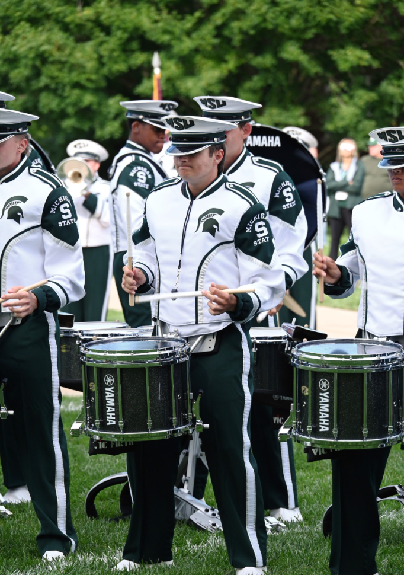

A photo of me performing in the MSU drumline
I've been playing snare drum since middle school and joined the Michigan State University Drumline in 2023. Over the years, I've developed a passion for teaching percussion and helping students improve their technique, timing, and confidence on the drumline.
My approach to teaching is built on the same fundamentals that helped me succeed: consistent practice, attention to detail, and a commitment to musical excellence. I believe everyone has unique potential, and my goal is to help you unlock it.
2010-PRESENT
Strong fundamentals are the key to long term success. We will focus on building proper technique from day one, ensuring you develop good habits that will help you out all the time.
Whether you're preparing for an audition, working on a specific piece, or simply want to improve, I like to create a personalized plan to help you achieve your goals efficiently and effectively.
Learning an instrument should be challenging but never discouraging. I create a positive, encouraging atmosphere where mistakes are learning opportunities and progress is celebrated.
My lessons incorporate techniques and exercises used by many drumlines and groups today, giving you practical skills that translate directly to performance settings.